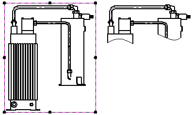
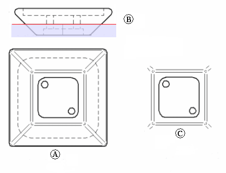
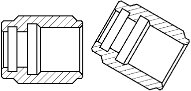
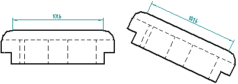
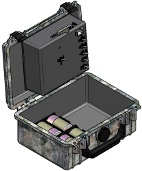
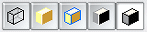
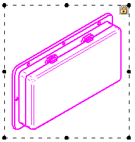

Drawing view manipulation
After you place a drawing view, you can manipulate it to ensure that information is presented the way you want. You also can lock a drawing view to prevent it from being manipulated accidentally.
Scaling drawing views
You can scale a drawing view with the Properties option when a drawing view is selected.
A part view shares the same scale as the part view used to create it. If you scale an aligned part view, all part views aligned with it are also scaled. If you want to scale one aligned part view without affecting the others, you must first clear the Maintain Alignment option on the shortcut menu when a drawing view is selected.
Removing drawing view geometry by cropping
If you want to show only part of a drawing view, you can crop it. To do this, you draw a boundary to enclose the portion of the view that you want to keep, and then crop away the portion outside of the boundary.

For more information, see Drawing view cropping.
Clipping drawing geometry behind a view
By specifying a drawing view display depth for a back clipping plane, you can simplify any type of drawing view so that geometry behind the plane is removed from the view. This feature can be used, for example, to reduce the visible clutter behind a section view or a broken-out section view.

For more information, see Trim drawing view geometry with a clipping plane.
Repositioning views
You can manipulate the view positions on the drawing sheet to better organize it.
-
You can move a drawing view anywhere on a drawing sheet using click+drag.
-
In a multi-sheet drawing, you can move a drawing view to a different sheet by changing the Sheet number that the drawing view is assigned to on the General tab (Drawing View Properties dialog box).
Rotating drawing views
You can rotate a drawing view with the Rotate command.

When you rotate a view, it becomes unaligned. You can use the Maintain Alignment command to restore the view to its original orientation.
Dimensions on the drawing view rotate with the view. Dimensions that use the horizontal and vertical dimension axis of the sheet are modified to use the horizontal and vertical axis of the rotated drawing view coordinate system.

You cannot perform folding, cropping, or broken view operations on rotated views and you cannot derive section or auxiliary views from a rotated view. The rotated view cannot be used as input for the Principal Views, Cutting Plane, or Auxiliary View commands.
Shading drawing views
You can shade a drawing view using the Shading and Color tab of the Drawing View Properties dialog box. You can control texture display, reflection display, and flat shading, as well as specify whether assembly override and part face colors display in the drawing view.

You can also control basic shading (color or grayscale, as well as edge display) with these command buttons, which are located on the Drawing View Selection command bar, the Auxiliary View command bar, the Section View command bar, and the Principal View command bar.

Adding graphics to the view
You can add 2D graphical elements to part views, draft views, and 2D views using the Draw In View command on the selected view's shortcut menu.
When the Draw In View window opens, choose any of the standard drawing tools to add line graphics, such as rectangles, arcs, circles, or ellipses, or add external images and pictures using the Image command on the Sketching tab.
Locking a drawing view
To prevent accidental movement of a drawing view, you can use the Lock drawing view position option that is available:
-
As a check box on the General tab (Drawing View Properties dialog box), when you edit the drawing view properties.
-
As a Lock button on the Drawing View Selection command bar, when you select the drawing view border.
A locked drawing view is indicated by the lock symbol displayed within the drawing view border when it is highlighted.

Locked drawing views still can be manipulated. For example, locking a drawing view does not prevent:
-
Indirect movement of the locked drawing view by the Create Alignment or Maintain Alignment command.
-
Explicit movement using the Move command or by changing the Sheet number.
-
Copying and pasting, or deleting the drawing view. (You can use the Undo command to reverse these operations.)
-
Dragging a drawing view derived from the locked view.
-
Rotating a locked drawing view.
How do I
Change drawing view orientationRotate a drawing view
Change the display in a part view
Shade a drawing view
Fit a drawing view
Activate or inactivate drawing views
Bring a dimension, annotation, or text box to the front
Send a Dimension, Annotation, or Text Box to the Back
Change drawing text size
Look up more details
Drawing View Selection command barFit Drawing View command
Inactivate Drawing Views command
Activate Drawing Views command
Bring to Front command
Send to Back command
Quick links
Using the View WizardDrawing view types
Drawing view styles